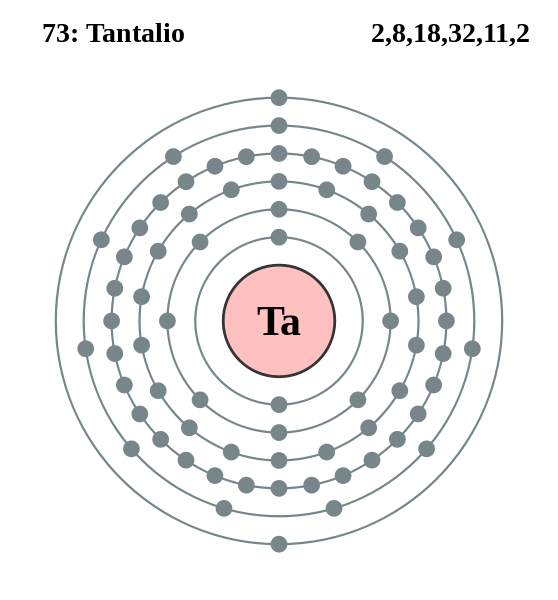

|
|
||
|
TANTALIO El tantalio se descubrió en 1802 y se produce principalmente en minerales columbita-tantalita. Se produjo por primera vez en una forma relativamente pura y dúctil en 1903. El tantalio es gris, pesado y muy duro. En su forma pura, es dúctil y, cuando se forma como cable, se usa como filamento para aluminio evaporado y otros metales. Se usa para aumentar los puntos de fusión, la resistencia y la ductilidad de las aleaciones. El tantalio natural posee dos isótopos; se conocen un total de 25. Este elemento también se usa en condensadores electrolíticos, piezas de hornos de vacío, equipos para procesos químicos, reactores nucleares, piezas para aeronaves y misiles y aplicaciones quirúrgicas. |
 |
DATOS Número Atómico: 73 Peso Atómico: 180.9 Electronegatividad: 1,5 Configuración Electrónica: [Xe]4f145d36s2 Estados de Oxidación: +5 No. de Electrones de Valencia: 5 |